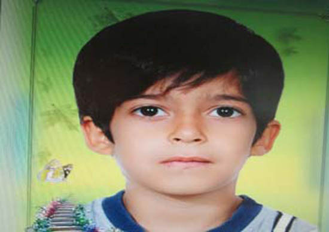
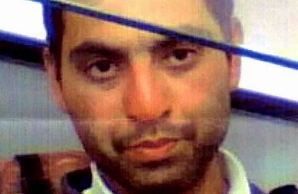

Non Intimate Partner Femicide
Sexual murder
A killer on a Batumi beach escapes to Iran.
Ia ShalamberidzeOn January 21, 2015, Mohammadamin Ruintan, 30, accused in the murder of 17-year-old Mariam Kochalidze in 2013 in Batumi, was detained by the police after the killing of an 8-year-old boy in Gomishan District, Iran.
On July 23, 2013, after hours of searching for the missing Kochalidze, the police and relatives found her body with a huge rock on her back in an abandoned area of the beach in Batumi. Her throat had been slit with a sharp subject; some of her jewelry, the bicycle and her iPhone 4 were missing from the crime scene.
According to Kochalidze’s godmother, Natalia Kvintradze, who had also been her closest friend, “she used to ride a bicycle to that place almost every evening. She kept a diary to make short interviews and notes about her impressions of new encounters.”
Because of the rocky surface and lack of buildings, relatively less people visited the area of the beach where Kochalidze was found. “Only homeless people were gathering there and Mariam knew them quite well. Sometimes she bought food for them. Some people say that she knew her murderer as well, but there is no other proof to it. Her notes show nothing of him,” said Kvintradze.
Gocha Mskhiladze, a dog handler, was among those who discovered the body. “That evening I saw that foreigner," he said. "I asked him from where he had taken the bicycle. He said he had rented it. When we found Mariam’s body, the first thing that came to my mind was that he could be who did this inhumane crime.”
In 2013, the influx of citizens of Iran into Georgia was reasonably high. The number especially increased in the summer tourist season. In June 2013, 9,839 people came from Iran to Georgia. Mohammadamin Ruintan was among them. According to Kvintradze, police found that Ruintan had come to Batumi as a tourist a month before the crimes was committed, and was frequently seen on the beach with a black rucksack on his back.
According to the Ministry of Internal Affairs of Georgia, the number of offenses committed by citizens of foreign countries has significantly increased in the last 10 years, especially in the Ajara region which includes Batumi. Citizens of Turkey top the list of most crimes committed, and Iran is fifth on that list. The most common crimes are forgery, illegal crossing of the border, swindling, burglary, and illegal entry to the occupied territories of Georgia. Serious crimes such as murder and trafficking are reported less frequently, and usually 10 or less per foreign country.
In 2013, Kochalidze’s case was definitely the most serious crime allegedly committed by a citizen of Iran in Georgia, and the only murder report involving citizens of Iran. Later in 2013, one Iranian woman was charged with injuring two Georgian citizens.
According to the police report, after murdering Kochalidze, Ruintan put a huge rock on her back and abandoned the crime scene, taking her bicycle. Soon he left the bicycle on a street, took a taxi, and reached the Sarpi terminal 12 kilometers away on the Turkish border.
According to the annual report of the Ministry of Internal Affairs, 80 suspects were detained on the border in 2013, but Ruintan left Sarpi terminal peacefully, leaving behind only a video record for the investigators to trace him. He left Georgia for Turkey at 7:22 pm. Later, DNA from Kochalidze was found in a blood trace left in the taxi. The investigation ruled Ruintan to be guilty of the crime and the court gave him a life sentence in absentia.
INTERPOL, which was involved in the case, is the world’s largest international police organization, with 190 member countries. Its mission is to prevent crime in the world through effective international cooperation. INTERPOL’s main legal document is its constitution, which defines the organization’s role, structure, budget and relation with other organizations. It clearly stresses that the cooperation between member countries is to be conducted under the Universal Declaration of Human Rights. All INTERPOL member countries are connected through a communication system, which is called I-24/7. It means that criminal databases containing millions of records are accessible 24 hours a day, 365 days a year. Criminal Intelligence analysts provide effective support in fighting against crime and inform member countries about information regarding their reported cases.
Based on reports from the member countries, INTERPOL publishes its notices. There are eight different types of notices, which vary according to their mission. The so-called Red Notice is published in order to find and arrest a reported person with a view to extradition or other required lawful action.

On October 24, 2013, the National Bureau of INTERPOL in Georgia published a Red Notice in order to locate Ruintan and arrest him. The process took more than one year. Although Ruintan's name never showed up on the Interpol notices as having returned to his home country, Iranian INTERPOL announced Ruintan’s detention in Iran.
On January 21, 2015, the Head of the National Bureau of INTERPOL in Georgia, George Mezvrishvili made a special statement in which he confirmed the information about Ruintan’s detention. “Today we received an official letter from Tehran INTERPOL which informed us about the arrest of Mohammadamin Ruintan, accused in the murder of Mariam Kochalidze. person was listed in the INTERPOL database of wanted people after the information about the crime he committed in Georgia spread,” stated Mezvrishvili.
Iranian news agency Hamshahri reported the arrest of Ruintan as the suspect in the murder of an 8-year-old child. According to Iranian authorities, Ruintan said his motive for killing his victims was revenge for a Georgian ex-girlfriend that had abandoned him. Watching someone bleeding gave him relief, he said.
After Ruintan’s detention, Georgia Minister of Justice of Georgia Thea Tsulukiani made a statement. “Since Mohammadamin Ruintan was arrested in Iran for killing a child, we have to wait for the sentence to be passed in Iran in order to decide whether this person will go to jail for both murders in Iran or in Georgia,” stated Tsulukiani.

If the sentence is carried out in Iran, Ruintan may face the death penalty. However, according to Iranian laws, he also has a chance to win his freedom. In Iran, murder is punishable under a section of "qesas-retributory" or retaliatory punishment that is applied to various offenses. Articles 204 -268 deal with retribution for murder. The Iranian legal system considers murder to be a matter between private parties and therefore does not refer to its punishment as the death penalty or execution. Theoretically, it is not the state but the survivors of the victim or “heirs of the blood” who impose retribution on the culprit.
In practice, in such cases the judicial authorities execute the murderer if the family of the victim demands execution. Survivors of a murder victim may instead decide to withdraw their demand for retribution in exchange for financial compensation, and let the murderer free.
But in most cases, murderers end up being executed either by hanging or stoning. Usually, executions are public and take from 15 to 20 minutes in order to enhance torture. Often family members are encouraged to take part in the execution process.
According to the non-profit organization Iran Human Rights, more than 500 prisoners are executed each year in Iran. The government apparently tries to hide the exact numbers. According to the Iran Human Rights 2014 annual report, the government listed only 268 out of 721 executions. It means that it hid 62.83% of the executions from the public. In the last 10 years, the total number of executions reported by Iran Human Rights has increased by more than 83%. Ruintan’s name is not listed among those 220 prisoners already executed in 2015.
At the Embassy of Iran in Georgia, there is no information about further developments in the case. Embassy officials confirm that the procedures accomplishing a death sentence may take a long time.
According to Mahmood Amiry-Moghaddam, the head and the founder of Iran Human Rights, “the process may last from days to decades. The shortest time ever reported was 40 days, but it may happen after 20 years as well. It all depends on two main factors: first, if the family of the victim insists on executing the person; and second, if the authorities want to demonstrate how strict and fast they are.” According to Amiry-Moghaddam, none of these factors took place in Ruintan's case, and he is still in prison, awaiting his sentence.